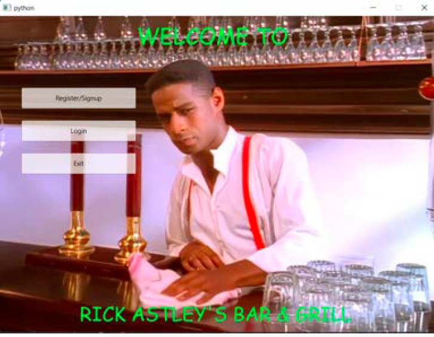

WFH Tracker
Python Personal Project
For tracking hours worked remotely automatically. Monitors mouse movement to see if employee is working. Hours are tracked by day in SQLite database. Click here to view source code.

PyOS
Python High School Project
Micro operating system built entirely with Python. Demonstrates the use of the pickle serialization in Python. Click here to view source code.

Restaurant Database
Python University Project
Restaurant management system. Demonstrates the use of the Object Relational Mapping and PyQt6 GUI in Python. Click here to view source code.
